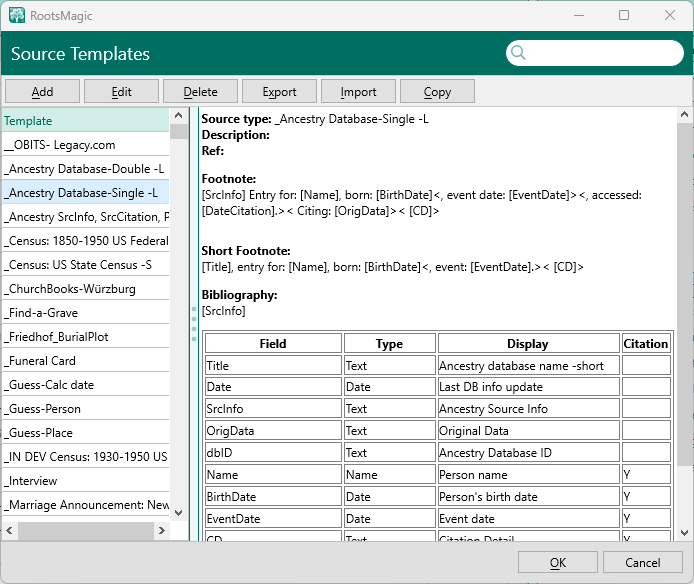

Configuration items that go into defining a source template are visible in three different windows. In some cases the same items are displayed in the three windows different names.
Part of the problem is that nomenclature for sources and citations seems to have changed over the years but these dialogs have not been updated.
This page will show the three windows and show the corresponding .rmst/xml file element.
In the RM Source Tab, select the Source Template List command in the three dot menu.
Display: The field name displayed when entering the source or citation. This can contain more descriptive text than the actual field name <Template><Field><Display>
Citation: Either blank or "Y".
Blank means the field is associated with the Source (master source),
Y means the field is associated with the citation.
<Template><Field><Detail> either "false" or "true"
When one selects a template and clicks Edit, the Source Template edit window is displayed
Note that in this window, the D column shows the same info as in the previous window's Citation column but in a different format. In the previous window Y was a citation field, in this window, it is shown as an "X".
The right side of the windows has text fields to enter the sentences for the Footnote Template, Short Footnote Template, and the Bibliography Template.
Select a field in the table and click the Edit Field button:
Display the field edit window.
Field Name (this is the name used to build templates)
Field Type
Display Name (this is the name displayed in the SourceWizard)
Brief hint to display for this field (shown n the blank field)
Long hint for this field (shown when the user clicks ? button)
Checkbox: This field is a source detail field
TODO table
Field Name <Template><Field><Name>
Field Type <Template><Field><Type>
Display Name <Template><Field><Display>
Brief hint <Template><Field><Hint>
Long hint <Template><Field><LongHint>
Checkbox <Template><Field><Detail>